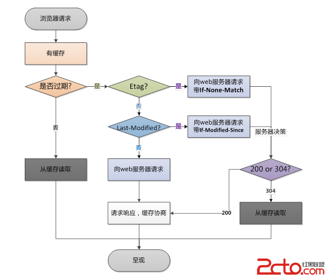

web前端性能优化方案
参考web技术文档资料
一般说来，web前端指网站业务逻辑之前的部分，包括浏览器加载、网站视图模型、图片服务、CDN服务等，主要优化手段有浏览器访问、使用反向代理才、CDN等。
浏览器请求处理流程如下图： 
http协议是无状态的应用层协议，意味着每次http请求都需要建立通信链路、进行数据传输，而在服务器端，每个http都需要启动独立的线程去处理。这些通信和服务的开销都很昂贵，减少http请求的数目可有效提高访问性能。 减少http的主要手段是合并CSS、合并JavaScript、合并图片。将浏览器一次访问需要的javascript和CSS合并成一个文件，这样浏览器就只需要一次请求。图片也可以合并，多张图片合并成一张，如果每张图片都有不同的超链接，可通过CSS偏移响应鼠标点击操作，构造不同的URL。 缓存的力量是强大的，恰当的缓存设置可以大大的减少 HTTP请求。假设某网站首页，当浏览器没有缓存的时候访问一共会发出 78个请求，共 600多 K数据，而当第二次访问即浏览器已缓存之后访问则仅有 10个请求，共 20多 K数据。 (这里需要说明的是，如果直接 F5刷新页面的话效果是不一样的，这种情况下请求数还是一样，不过被缓存资源的请求服务器是 304响应，只有 Header没有Body，可以节省带宽 ) 怎样才算合理设置 ?原则很简单，能缓存越多越好，能缓存越久越好。例如，很少变化的图片资源可以直接通过 HTTP Header中的Expires设置一个很长的过期头 ;变化不频繁而又可能会变的资源可以使用 Last-Modifed来做请求验证。尽可能的让资源能够在缓存中待得更久。关于 HTTP缓存的具体设置和原理此处就不再详述了。
对一个网站而言，CSS、javascript、logo、图标这些静态资源文件更新的频率都比较低，而这些文件又几乎是每次http请求都需要的，如果将这些文件缓存在浏览器中，可以极好的改善性能。通过设置http头中的cache-control和expires的属性，可设定浏览器缓存，缓存时间可以是数天，甚至是几个月。 在某些时候，静态资源文件变化需要及时应用到客户端浏览器，这种情况，可通过改变文件名实现，即更新javascript文件并不是更新javascript文件内容，而是生成一个新的JS文件并更新HTML文件中的引用。 使用浏览器缓存策略的网站在更新静态资源时，应采用逐量更新的方法，比如需要更新10个图标文件，不宜把10个文件一次全部更新，而是应该一个文件一个文件逐步更新，并有一定的间隔时间，以免用户浏览器忽然大量缓存失效，集中更新缓存，造成服务器负载骤增、网络堵塞的情况。
在服务器端对文件进行压缩，在浏览器端对文件解压缩，可有效减少通信传输的数据量。如果可以的话，尽可能的将外部的脚本、样式进行合并，多个合为一个。文本文件的压缩效率可达到80%以上，因此HTML、CSS、javascript文件启用GZip压缩可达到较好的效果。但是压缩对服务器和浏览器产生一定的压力，在通信带宽良好，而服务器资源不足的情况下要权衡考虑。
合并 CSS图片，减少请求数的又一个好办法
这条策略实际上并不一定能减少 HTTP请求数，但是却能在某些条件下或者页面刚加载时减少 HTTP请求数。对于图片而言，在页面刚加载的时候可以只加载第一屏，当用户继续往后滚屏的时候才加载后续的图片。这样一来，假如用户只对第一屏的内容感兴趣时，那剩余的图片请求就都节省了。
浏览器会在下载完成全部CSS之后才对整个页面进行渲染，因此最好的做法是将CSS放在页面最上面，让浏览器尽快下载CSS。如果将 CSS放在其他地方比如 BODY中，则浏览器有可能还未下载和解析到 CSS就已经开始渲染页面了，这就导致页面由无 CSS状态跳转到 CSS状态，用户体验比较糟糕，所以可以考虑将CSS放在HEAD中。 Javascript则相反，浏览器在加载javascript后立即执行，有可能会阻塞整个页面，造成页面显示缓慢，因此javascript最好放在页面最下面。但如果页面解析时就需要用到javascript，这时放到底部就不合适了。 Lazy Load Javascript（只有在需要加载的时候加载，在一般情况下并不加载信息内容。）随着 Javascript框架的流行，越来越多的站点也使用起了框架。不过，一个框架往往包括了很多的功能实现，这些功能并不是每一个页面都需要的，如果下载了不需要的脚本则算得上是一种资源浪费 -既浪费了带宽又浪费了执行花费的时间。目前的做法大概有两种，一种是为那些流量特别大的页面专门定制一个专用的 mini版框架，另一种则是 Lazy Load。
在某些页面中可能存在这样一种需求，需要使用 script标签来异步的请求数据。类似
<span style="font-size:14px;">
/*Callback 函数*/
function myCallback(info){
//do something here
}
HTML:
Callback返回的内容 :
myCallback('Hello world!');
</span>
像以上这种方式直接在页面上写 script 对页面的性能也是有影响的，即增加了页面首次加载的负担，推迟了 DOMLoaded和window.onload 事件的触发时机。如果时效性允许的话，可以考虑在 DOMLoaded事件触发的时候加载，或者使用 setTimeout方式来灵活的控制加载的时机。
一方面，cookie包含在每次请求和响应中，太大的cookie会严重影响数据传输，因此哪些数据需要写入cookie需要慎重考虑，尽量减少cookie中传输的数据量。另一方面，对于某些静态资源的访问，如CSS、script等，发送cookie没有意义，可以考虑静态资源使用独立域名访问，避免请求静态资源时发送cookie，减少cookie传输次数。
HTML Collection（HTML收集器，返回的是一个数组内容信息） 在脚本中 document.images、document.forms、getElementsByTagName()返回的都是HTMLCollection类型的集合，在平时使用的时候大多将它作为数组来使用，因为它有 length属性，也可以使用索引访问每一个元素。不过在访问性能上则比数组要差很多，原因是这个集合并不是一个静态的结果，它表示的仅仅是一个特定的查询，每次访问该集合时都会重新执行这个查询从而更新查询结果。所谓的“访问集合” 包括读取集合的 length属性、访问集合中的元素。 因此，当你需要遍历 HTML Collection的时候，尽量将它转为数组后再访问，以提高性能。即使不转换为数组，也请尽可能少的访问它，例如在遍历的时候可以将 length属性、成员保存到局部变量后再使用局部变量。
with(obj){ p = 1}; 代码块的行为实际上是修改了代码块中的执行环境 ，将obj放在了其作用域链的最前端，在 with代码块中访问非局部变量是都是先从 obj上开始查找，如果没有再依次按作用域链向上查找，因此使用 with相当于 因此，除非你能肯定在 with代码中只访问 obj中的属性，否则慎用 with，替代的可以使用局部变量缓存需要访问的属性。
每次 eval 或Function 构造函数作用于字符串表示的源代码时，脚本引擎都需要将源代码转换成可执行代码。这是很消耗资源的操作 —— 通常比简单的函数调用慢 100倍以上。 eval 函数效率特别低，由于事先无法知晓传给 eval 的字符串中的内容，eval在其上下文中解释要处理的代码，也就是说编译器无法优化上下文，因此只能有浏览器在运行时解释代码。这对性能影响很大。 Function 构造函数比 eval略好，因为使用此代码不会影响周围代码 ;但其速度仍很慢。 此外，使用 eval和 Function也不利于Javascript 压缩工具执行压缩。
前文谈到了作用域链查找问题，这一点在循环中是尤其需要注意的问题。如果在循环中需要访问非本作用域下的变量时请在遍历之前用局部变量缓存该变量，并在遍历结束后再重写那个变量，这一点对全局变量尤其重要，因为全局变量处于作用域链的最顶端，访问时的查找次数是最多的。 低效率的写法：
var globalVar = 1;
function myCallback(info){
for( var i = 100000; i--;){
//每次访问 globalVar 都需要查找到作用域链最顶端，本例中需要访问 100000 次
globalVar += i;
}
}
更高效的写法：
var globalVar = 1;
function myCallback(info){
//局部变量缓存全局变量
var localVar = globalVar;
for( var i = 100000; i--;){
//访问局部变量是最快的
localVar += i;
}
//本例中只需要访问 2次全局变量 在函数中只需要将 globalVar中内容的值赋给localVar 中
globalVar = localVar;
}
此外，要减少作用域链查找还应该减少闭包的使用
Javascript中的数据访问包括直接量 (字符串、正则表达式 )、变量、对象属性以及数组，其中对直接量和局部变量的访问是最快的，对对象属性以及数组的访问需要更大的开销。当出现以下情况时，建议将数据放入局部变量：
在 Javascript中使用”+”号来拼接字符串效率是比较低的，因为每次运行都会开辟新的内存并生成新的字符串变量，然后将拼接结果赋值给新变量。与之相比更为高效的做法是使用数组的 join方法，即将需要拼接的字符串放在数组中最后调用其 join方法得到结果。不过由于使用数组也有一定的开销，因此当需要拼接的字符串较多的时候可以考虑用此方法。
在大多数人的观念中，都觉得浏览器对 CSS选择符的解析式从左往右进行的，例如 #toc A { color: #444; }这样一个选择符，如果是从右往左解析则效率会很高，因为第一个 ID选择基本上就把查找的范围限定了，但实际上浏览器对选择符的解析是从右往左进行的。如上面的选择符，浏览器必须遍历查找每一个 A标签的祖先节点，效率并不像之前想象的那样高。根据浏览器的这一行为特点，在写选择符的时候需要注意很多事项，有兴趣的童鞋可以去了解一下。
CDN（contentdistribute network，内容分发网络）的本质仍然是一个缓存，而且将数据缓存在离用户最近的地方，使用户以最快速度获取数据，即所谓网络访问第一跳，如下图。 由于CDN部署在网络运营商的机房，这些运营商又是终端用户的网络服务提供商，因此用户请求路由的第一跳就到达了CDN服务器，当CDN中存在浏览器请求的资源时，从CDN直接返回给浏览器，最短路径返回响应，加快用户访问速度，减少数据中心负载压力。 CDN缓存的一般是静态资源，如图片、文件、CSS、script脚本、静态网页等，但是这些文件访问频度很高，将其缓存在CDN可极大改善网页的打开速度。